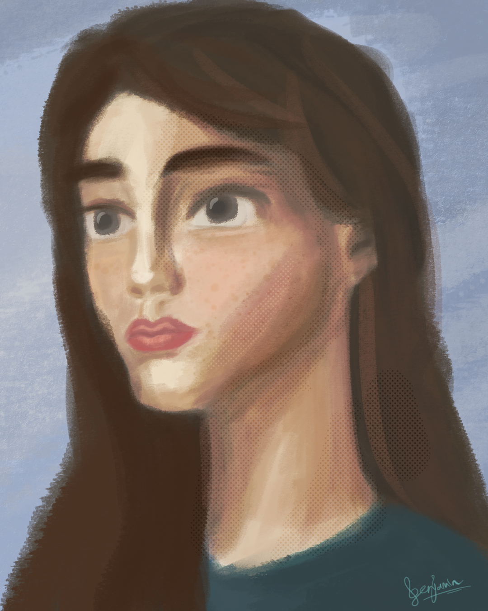
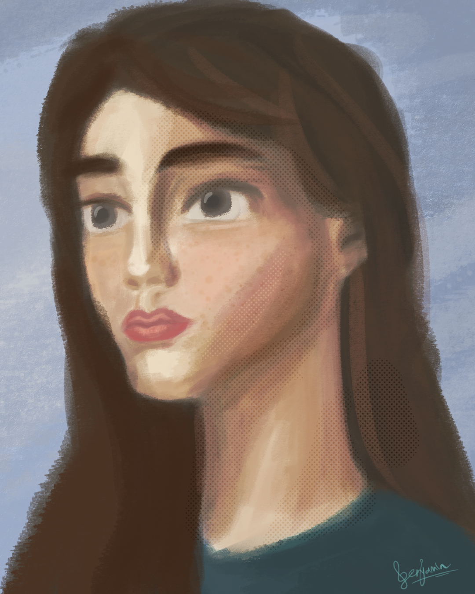
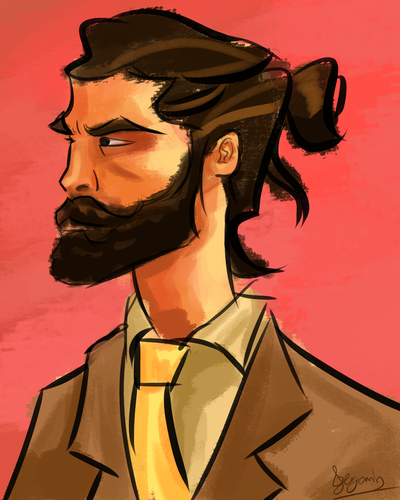
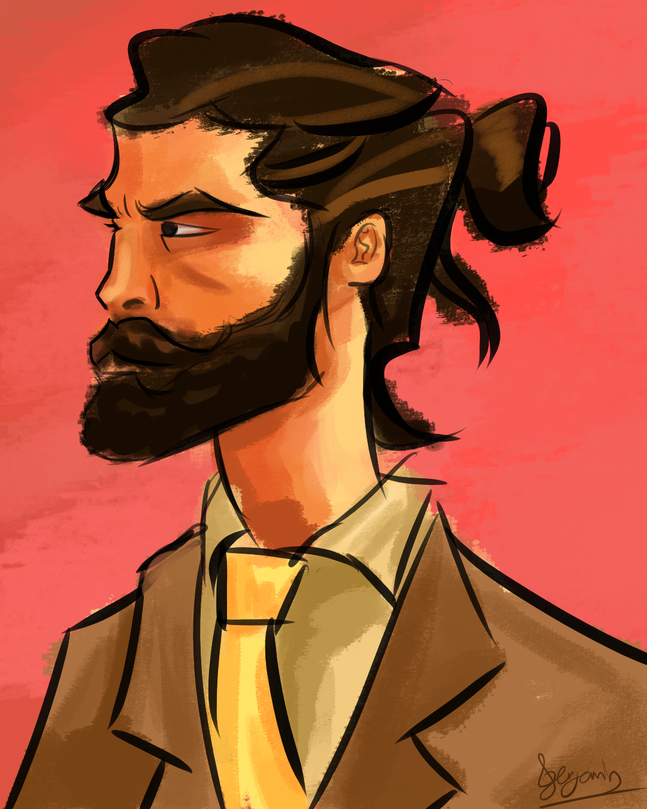
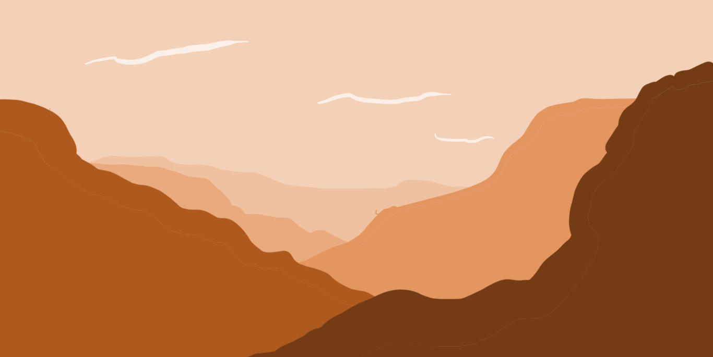

My art
Some of the stuff I've made over the years
Gallery
(Click on an Image to view full size)

 


 (I know, creative name)
(I know, creative name)I tried to be fairly loose with this one. I like how the end result feels and that's all that matters.">


